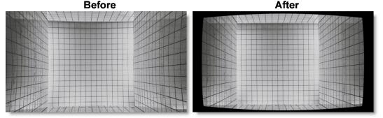
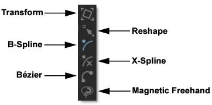
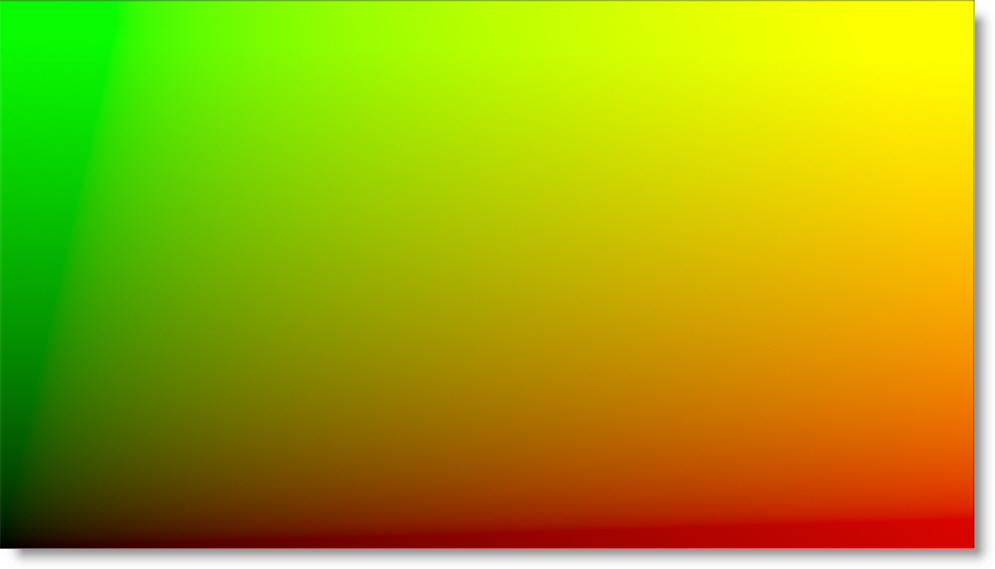
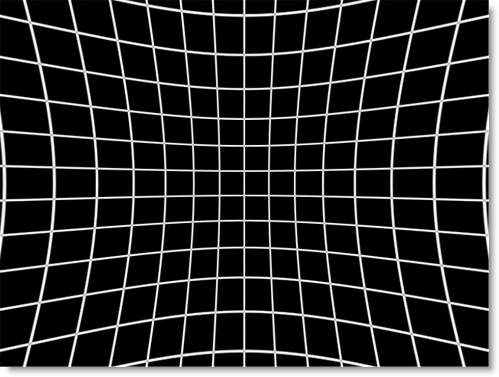
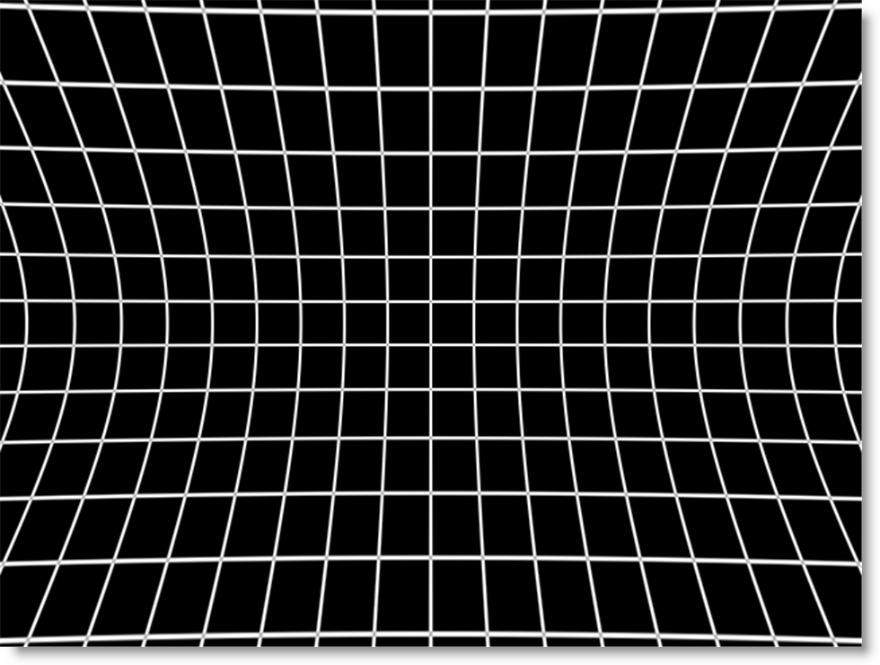

Lens Correction
Description
Powered by Silhouette’s Roto tools and based on shared technology from Mocha Pro’s Lens Module, Lens Correction undistorts lens distortion and generates ST Maps for third party applications. To compute lens distortion, you need an image with one or more distorted straight lines or a distortion map, sometimes called a UV map or ST Map.
Node Group
Warp.
Go to the
Lens Correction tutorials to see how it works.
Overview
Typical lens distortion causes a square object to appear either as barrel or pin cushion shaped. The most obvious way to tell whether your images are distorted is to look at the straight edges of objects. If lines that should be straight are actually curved, this is indicative of distortion. If there are no long straight edges in the scene, for instance a natural scene, then it is much more difficult to discern distortion even when it is significant. To compute lens distortion, you need an image with one or more curved lines that should be straight or a distortion map.
Line Calibration
For line calibration, you can either use your source material if it has suitable lines or you can photograph a calibration grid. In either case, an open shape spline is drawn over a curved line that should otherwise be straight. This spline in conjunction with a camera model is then used to compute the distortion.
Distortion Maps
If you already have distortion maps, you can remove or work with distortion by importing your maps instead of line calibrating.
Correcting Distortion
There are two parts to correcting distortion--1a) Select a distortion map or 1b) Create an open shape spline over one or more curved lines that should be straight and 2) Correct the distortion.
Lens Correction Workflow
Using A Distortion Map
1 Connect the source clip into Lens Correct’s first input.
2 Connect the distortion map into the Distortion Map input.
The image is automatically corrected based on the distortion map.
Using Line Calibration
1 Connect the source clip into Lens Correct’s first input and if available, an optional calibration clip into the Calibration Reference input.
2 Using the integrated Roto shape tools in the Toolbar, create at least one open shape over a curved line that should be straight.
3 Once lines are defined, click on the Camera Model pop-up menu and select a model. Usually 1-Parameter or 2-Parameter are good choices.
4 Click the Calibrate button.
Controls
Optional Inputs
Calibration Reference
Uses a calibration clip, normally a grid, when identifying the curved lines that should be straight. If not hooked up, the main input is used instead.
Distortion Map
Uses a distortion map to correct the distortion.
Line Calibration With Integrated Roto Tools
Creating at least one calibration line over a curved line that should be straight using the integrated Roto shape tools is the most important part of the process for 1-Parameter, 2 Parameter and Anamorphic calibration. This determines what lines should be straight in the clip.
Since open shapes are required for Lens Correction, it has its own shape tools similar to those in the Roto node. You can choose from B-Spline, Bézier, X-Spline or Magnetic Freehand shapes and have use of the Transform and Reshape tools as well.
See the
Roto Node for more information.
Creating Calibration Lines
• Identify at least one curved line that should be straight and draw an open shape over it using the integrated Roto tools.
• Choose lines that exhibit the most distortion, typically those reaching towards the edge of the image, and not pointing towards the center.
• Make sure the lines cover the majority of the image, otherwise the distortion may be computed incorrectly in the areas where there are no lines.
Camera Models
After creating the calibration lines, a camera model must be selected.
Distortion Map
Distortion Map is only used with distortion maps and is not related to line calibration. If you are working with distortion maps, sometimes called UV maps or ST Maps, a lot less calibration is required. You can simply connect your map file into the Distortion Map input and the lens correction will automatically occur.
Note: Distortion maps must be 32-bit float RGB.
1-Parameter
Use when a small amount of distortion is present.
2-Parameter
Use the 2-Parameter radial distortion model if 1-Parameter doesn’t capture all the distortion in the image. This distortion model is often used when there is a wave or irregularity in the lens.
1-Parameter Inv
Use only with RealViz Rz3 files.
Anamorphic
In cases where the radial distortion models are not sufficient or you have an anamorphic shot for which a radial distortion model is not suitable, select the Anamorphic camera model. This allows for different horizontal and vertical distortion.
Calibrate
Computes and applies the lens correction based on the open shapes and the selected camera model, either 1-Parameter, 2-Parameter or Anamorphic.
Filter
Chooses the filtering method when lens correction is applied. Bilinear is the default.
Bilinear
Considered a medium-quality method, it works by averaging the color of the pixel above, below, and to the right and left of each pixel.
Triangle
The Triangle filter is not the highest quality, but fine for scaled images.
Quadratic
Quadratic is like triangle, but more blur with fewer artifacts. It offers a good compromise between speed and quality.
Cubic
Cubic is the default filter in Photoshop. It produces better results with continuous tone images, but is slower than Quadratic. If the image contains fine details, the result may be blurrier than desired.
Catmull-Rom
This produces good results with continuous tone images which are scaled down, producing sharp results with fine detailed images.
Gaussian
Gaussian lacks in sharpness, but is good with ringing and aliasing.
Mitchell
A good balance between sharpness and ringing, Mitchell is a good choice when scaling up.
Sinc
Keeps small details when scaling down with good aliasing.
Update DOD
The DOD of the image is automatically updated based on the lens correction. When enabled, this ensures that image areas corrected beyond the image boundary are not lost when the image is later distorted.
Correction
Undistort
Undistorts the image by removing lens distortion.
Distort
Distorts the image by adding lens distortion.
Distortion
The distortion values for the current camera model are computed automatically using the Calibrate button. If you don’t get good results using the calibration procedure, or have known distortion parameters, you can adjust them manually.
Manipulate the distortion parameters and observe the effect on the image, choosing the parameters that straighten the curved lines as accurately as possible. This should at least deal with the worst effects of the distortion.
Note: The distortion parameters change based on the camera model.
1-Parameter: K1
K1 is the radial distortion coefficient. If you double the value, you get twice as much distortion. 0 means no distortion, positive corrects for pincushion and negative corrects for barrel distortion. The 1-parameter model is a uniform distortion centered around the Center x/y position,
2-Parameter: K1, K2
K1 and K2 are the radial distortion coefficients. K1 works the same as in the 1-parameter model and K2 is a fine tuning of the outer edge of the distortion field. By reversing the sign of K1 vs K2 you can model lenses with uneven, wavy, distortion characteristics.
Anamorphic: Cxx, Cxy, Cyx, and Cyy
The Anamorphic camera model uses the Cxx, Cyy, Cxy and Cyx parameters. Cxx and Cyy are a non-linear stretch in the respective direction and have no effect at the image center, increasing toward the edge. Cxy and Cyx are separate horizontal and vertical components of radial distortion. They work similar to the K1 control, but the values are not interchangeable between the models.
Center
The image center is naturally set at the center of the image by default. The coordinates can be entered manually to match the center position of the lens by adjusting the Center X or Center Y parameters. Otherwise, the center is adjusted automatically when Calibrate is selected.
Center X
Sets the horizontal center.
Center Y
Sets the vertical center.
Lens Correction View Menu
Shortcut | Action |
|---|
1 | View the Output |
2 | View the Input |
3 | View the Calibration Reference |
4 | View Grid |
5 | View Input Distortion Map |
6 | View Output Distortion Map |
Node Outputs
Output
Outputs the result of the Lens Correction node.
Undistort Map
Outputs a 32 bit float map that undistorts. Only 1 frame needs to be rendered unless the distortion is animated.
Distortion Map
Outputs a 32 bit float map that distorts. Only 1 frame needs to be rendered unless the distortion is animated.
Note: When rendering the Undistort and Distortion Maps, make sure you select Data Window > DOD in the Render Options window and for non-EXR images, also disable Crop/Pad in the Output node. This will ensure that if the lens correction created a DOD larger than the Session size, the rendered file will also be larger.